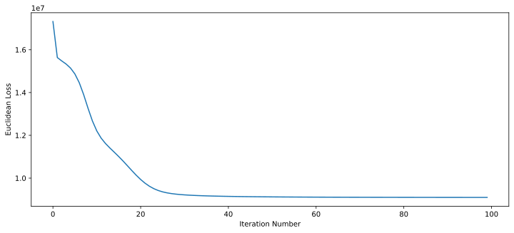
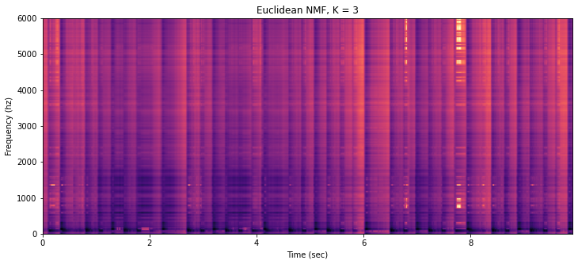

Homework 5b: NMF for Music Component Separation (28 Points)
Chris Tralie
Learning Objectives
- Implement an unsupervised learning technique to discover structure in data
- Use matrix multiplication in the service of a data science application
- Implement nonnegative matrix factorization
Background / Getting Started
Click here to download the starter code, which you can use to follow along with the examples below. When you're finished, submit your notebooks to canvas, along with answers to the questions and an indication of your buddy if you had one. Any feedback about the assignment for future generations of students is also welcome at that point.
In this assignment, you will be implementing a problem called "blind source separation," which is also referred to as the "cocktail party problem" in the context of audio; that is, if we're at a cocktail party and 20 people are talking at the same time, how do we hone in on just the sound of the person speaking to us? In the context of musical audio, this is akin to honing in on a particular instrument in a mix of many instruments (e.g. picking out the guitar sound from a mix of guitar, vocals, and drums). In this homework, you will be using nonnegative matrix factorization to implement a solution to this problem.
Audio Spectrograms
It is possible to represent audio in a nonnegative matrix called a spectrogram, in which the columns represent time and the represent "frequency content"; that is, higher index rows are element corresponding to higher pitches, and rightward columns progress through time. A bright pixel indicates that there is a lot of energy at that time and frequency, and a darker pixel indicates that there is less energy. For example, let's create the spectrogram of 10 seconds from Prince's song When Doves Cry from his Purple Rain album
We can pick out some cool aspects of the audio in these matrices. Vertical lines correspond to percussive events, and bands of horizontal lines correspond to pitched instruments/voice. But they're all mixed together, and we want to separate them!
Nonnegative Matrix Factorization of Audio Spectrograms
If the spectrogram is an M x N matrix and we want to try to represent it with K components, we can solve for an M x K matrix W that represents each little instrument sound, as well as a K x N matrix H which represents the activations of each column of W over time. Let's define code for Euclidean NMF like we discussed in class, as well as code to compute the loss over time
NMF Euclidean Loss/Code
Let's suppose we run this code with K = 3 on the spectrogram for "When Doves Cry"
We get the following loss over time (we see that it's always decreasing but it starts to bottom out after about 40 iterations)
And we get the following spectrogram
We can see that we've lost a lot of the finer details in the spectrogram, though the rhythmic events are still visible. But what does it sound like? We can use a procedure known as Griffin Lim phase retrieval to go from a spectrogram back to audio and listen. I provided code for this with this assignment, so let's use it
Here's what we get
It's no longer possible to make out the vocals or to play more than one note, but we can definitely hear the vocals, percussion, and note separately. So somehow, with our three components, it seems we've managed to pick up on these three things! Your job in this assignment will be to separate them out individually, and then to use these ideas to filter out vocals.
Programming Tasks
Task 1: Kullback-Liebler NMF (10 Points)
I've shown you how to implement the Euclidean NMF, but I want you to implement a different version which works better for musical audio that optimizes for a different loss function known as the Kullback-Liebler Divergence. Have a look at the linked notes and implement this version. Then, perform an experiment where you let K = 3, 10, 30 and run NMF for 100 iterations and plot the spectrogram and loss. Be sure that the loss is decreasing over time. Finally, use griffin lim to listen to the audio in each case. Question: What do you notice about the spectrograms, audio, and loss trajectories as you increase K? How would you explain this?
Task 2: Separating Components (8 Points)
Once you learn W and H, you can take out individual components of the audio and listen to them. You can do this by zeroing out the activations in H for all but one column in W. To do this, keep W fixed, but change H. You'll have to think carefully about the column vector interpretation of matrix multiplication when you modify H.
When you use K = 3 and isolate the three tracks separately, you should be able to hear what sounds a bit like vocals, drums, and vocals when you do Griffin Lim. Demonstrate in your notebook that you are able to do this.
Task 3: Music Sample Processing (6 Points)
There was a really neat paper that came out a few years ago that showed how it's possible to use "partially fixed" nonnegative matrix factorization to figure out if one audio clip sampled another one (which often happens in hip hop, for example). Click here to read the paper if you're curious. The idea was to learn some columns for W from the sample, and then to use these and additional columns to represent the sampling track. We'll do a simplified version of this by training the W matrix on the sample and then learning activations in the H matrix to approximate the track that samples it. As an example, let's a clip from "My Name Is" by Eminem
A little known fact is that this actually uses a sample verbatim from a tune known as "I Got The" by British musician/poet Labi Siffre
Both of these audio files have been provided in the starter code.
Your task: You will be doing a "fully fixed W" version of KL NMF here. Learn the W matrix from Labi's original tune using K = 30, and keep it totally fixed (i.e. skip the update rules for W) to learn an H which approximates the spectrogram for Eminem's tune. Then, listen to the WxH that you get. Question: How do the results of this compare to the results of using K = 30 for learning both W and H from scratch on Eminem? How would you explain this?
Task 4: Ethics (4 Points)
Discuss any ethical issues that you see coming up from a program that's able to un-mix audio this way, or a program that's able to detect samples. Are there positive and negative uses are there for this technology running at scale?